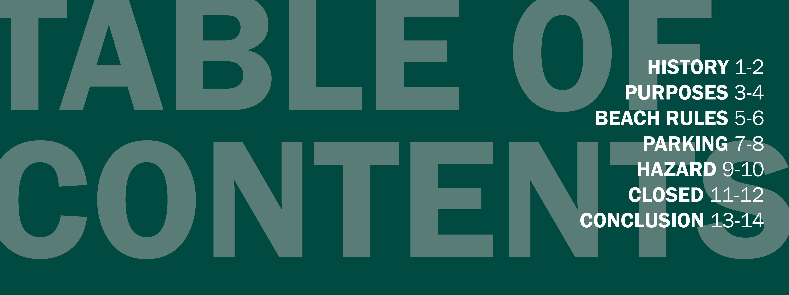
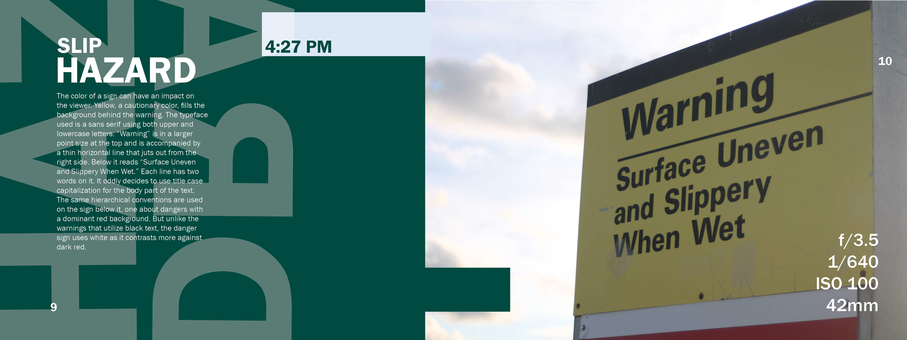
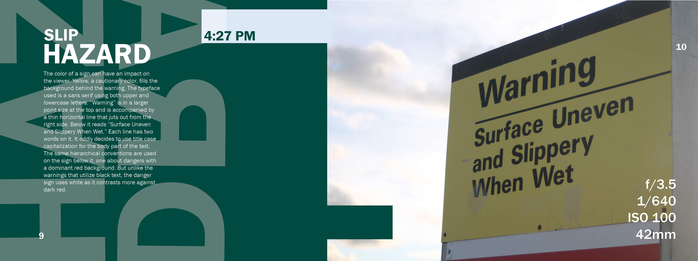
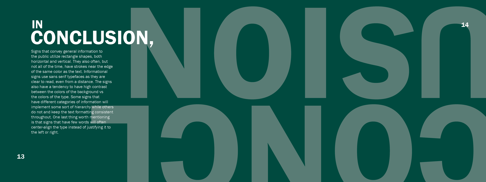
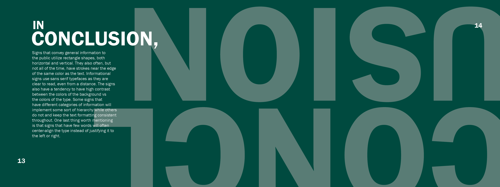
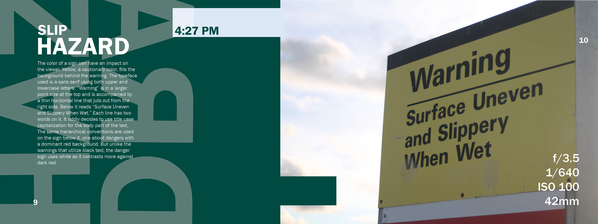
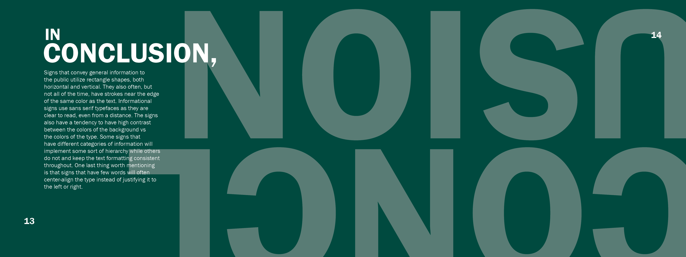

12/2023
FLIPBOOK

CLASS: Art349 - Typography
As the final assignment of Art349, this project includes much of what we discussed over the course of the semester. It implements elements such as a hierarchy and thought-out grid structure. We also had to write a narrative related to the photographs we took and included in our flipbooks.
I chose to make mine about the informational signs that I found in Grand Haven, MI. In my narrative, I discussed the way text was used in the signs to convey the messages that they were designed for. Along with that, I also included the camera settings that the photos were taken with as well as the times I took them.



 

 


